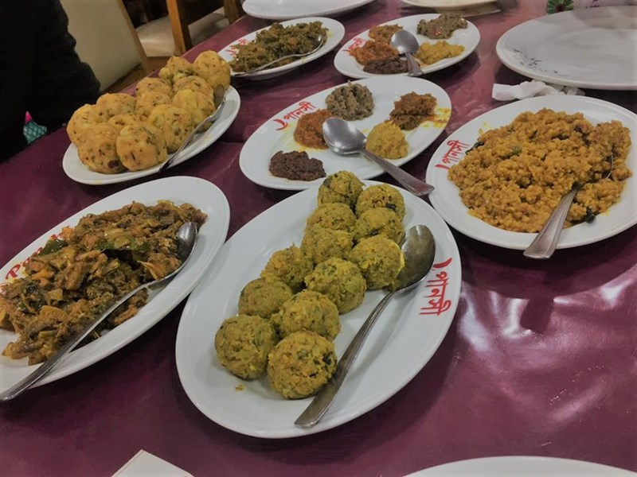

Woondal King Kebab
Description
It is the place which is well known to each and everyone in Sylhet who love to eat outside.
Situated at Barutkhana Road, it has always served its customers flavorsome and delectable Indian
cuisine. This is the perfect place for having lunch or dinner in Sylhet. The ambiance is not
extraordinary but the food is out of the world. As I am from Sylhet, I have been to this place
uncountable times. I must say, some of their dishes are so tasty and scrumptious that it’s going
to beat any of the Indian restaurants in the country. They have the best Hydrabadi biriyani in town
which is worth of BDT210+ only. The rice of the biriyani is very flavorful and the meat is tender
and soft. They have some curry options which go really well with their prominent garlic naan, butter
naan and aloo paratha. In terms of curries, they offer paneer butter masala, chicken vorta, beef
shatkora, beef achari, mutton masala, mutton korai are the winners. Paneer butter masala is a
vegetarian dish where paneer cubes are cooked in a special curry sauce. It is so mouth-watering
that every time I end up licking my fingers dipped in that sauce. Chicken vorta translates to
smashed chicken, but it’s actually thin pieces of chicken cooked with spicy masala and served with
eggs. Beef Shatkora is a famous dish all over Sylhet which is a beef curry cooked with a vegetable
called “Shatkora”. Mutton masala, mutton korai, beef achari, all these dishes are appetizing.
All the curry dishes are priced between BDT180-300. Most of the dishes are 1:3. So, it’s better
to go along with two people. It’s not going to cost more than BDT1500 for three people in Woondal.

Hot Spot
Description
Located in the heart of Sylhet Zindabazaar, this place usually serves Italian and Mexican cuisine.
They serve Mexican dishes like burritos, quesadillas, cheese steak and Italian dishes like pasta,
pizza. It is not popular among foodies because of not selling traditional food items and being
expensive. But they have one stand out dish which deserves plenty of appreciation. The name of
the dish is “Philadelphia Cheese Steak”. It’s not an ordinary steak dish and could be found only
at a few restaurants in the country. The steak is stuffed with philadelphia cheese and tastes
amazing. Each bite of the steak tastes heavenly.

Panshi Restaurant
Description
It is also located at Zindabazaar and serves its customers from dawn to dusk.
They have an all-day menu starting from breakfast. They have paratha, akhni. khichuri,
dal, liver, egg and many other luscious dishes for breakfast at a very cheap price.
They start serving breakfast at 6.00 in the morning and it costs around only BDT100-150 per person.
For lunch and dinner, they serve different types of vortas, biriyanis and various fish.
Meat dishes such as chicken and duck roast, quail and pigeon roast, beef Kala Bhuna are also served .
They have a separate evening menu which consists of naan, kebabs, grilled chicken, brain fry etc.
They sell tea all day long which is refreshing and dense. It’s a proper Bengali restaurant and a
meal costs only BDT250-400 per person. The ambiance of this restaurant is not appropriate for families. This place is always overcrowded and sometimes people have to hold others chairs so that they can sit after the person already sitting finishes the meal. Cleanliness and hygiene are the biggest concerns for the restaurant. They also have some other branches in Sreemongol, Moulovibazaar, but the one in Sylhet is always the favorite of many people. If you are craving from some authentic delicious Bengali food at a very reasonable price, then this is an ideal place.